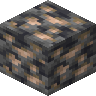

深层铁矿石
Deepslate Iron Ore
英文名: Deepslate Iron Ore命名空间 ID:
minecraft:deepslate_iron_ore类型: 方块所属模组: Minecraft资料检索: 🔎 在 MC百科 搜索「深层铁矿石」所属标签
获取方式
世界生成 (4)
minecraft:ore_ironminecraft:ore_iron_smallnatures_spirit:ores/ore_ironnatures_spirit:ores/ore_iron_small
纯原版配方（合成、烧炼等）不在本图鉴收录范围，以下仅列出模组与 CraftTweaker 相关配方。
模组配方 · 用于 (5)
bountifulfares:millingBountiful Fares

原始 JSON
{
"type": "bountifulfares:milling",
"ingredient": {
"item": "minecraft:deepslate_iron_ore"
},
"result": {
"id": "minecraft:raw_iron"
},
"result_count": 2
}kaleidoscope_cookery:millstoneKaleidoscope Cookery
原始 JSON
{
"type": "kaleidoscope_cookery:millstone",
"ingredient": {
"item": "minecraft:deepslate_iron_ore"
},
"result": {
"count": 3,
"id": "minecraft:raw_iron"
}
}farm_and_charm:mincer[Let's Do] Farm & Charm
原始 JSON
{
"type": "farm_and_charm:mincer",
"ingredient": {
"item": "minecraft:deepslate_iron_ore"
},
"recipe_type": "METAL",
"result": {
"id": "minecraft:raw_iron",
"count": 3
}
}oritech:grinderOritech
原始 JSON
{
"type": "oritech:grinder",
"ingredients": [
{
"tag": "minecraft:iron_ores"
}
],
"results": [
{
"count": 2,
"id": "minecraft:raw_iron"
},
{
"count": 1,
"id": "oritech:raw_nickel"
}
],
"time": 40
}